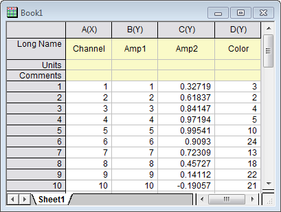
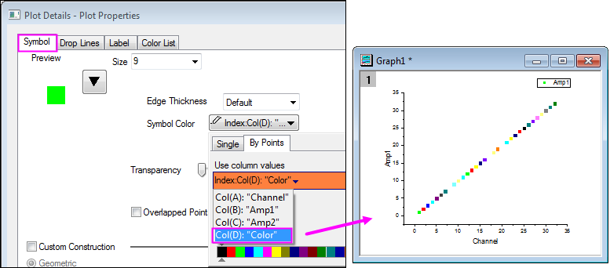
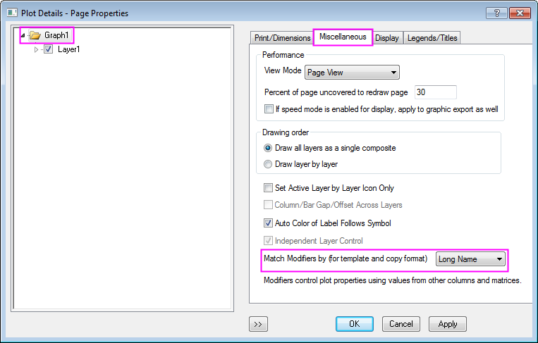
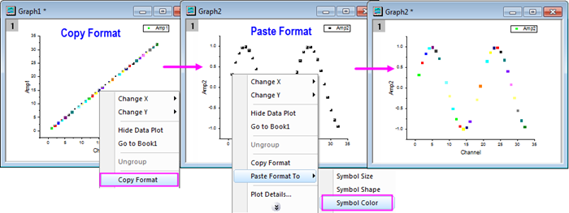
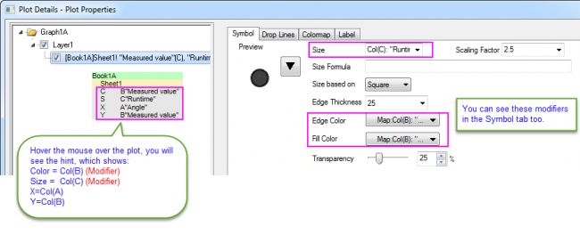
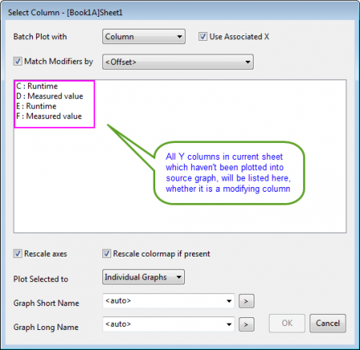
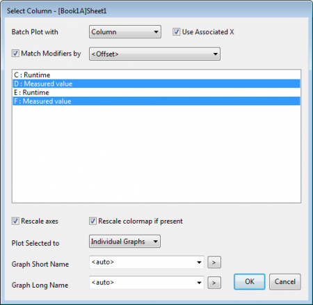
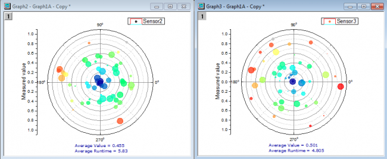
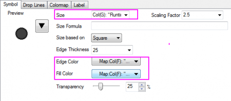

Modifizierer stimmen überein mit
Match-Modifiers-by
Einige Zeichnungsattribute von Origin können modifiziert werden, indem Sie das Attribut mit einer Arbeitsblattspalte mit Werten verknüpfen. Dies hat das Erstellen einer Zeichnung zur Folge und dann das Verwenden der Bedienelemente im Dialog Details Zeichnung, um die Zeichnungsattribute mit der modifizierenden Spalte zu verbinden.
Erfahren Sie mher zur Verwendung von Datensätzen zum Modifizieren von Zeichnungen unter:
Wenn es eine modifizierende Spalte für eine Diagrammeigenschaft gibt, können Sie die Option Modifizierer stimmen überein mit (für Vorlage und Format kopieren) im Dialog Details Zeichnung verwenden, um festzulegen, mit was die Modifizierer der Zeichnung übereinstimmen sollen (nach Spaltenindexversatz, Kurzname, Langname, Einheiten, Kommentare, (Standardparameter oder Benutzerdefinierte Parameter). Diese Übereinstimmungseinstellung kann in einer Diagrammvorlage gespeichert oder während des Kopierens der relevanten Stilformate eingebunden werden.
Wenn Sie ein Diagramm auf Grundlage einer gespeicherten Vorlage erstellen oder die Operation Format einfügen in durchführen, sucht Origin nach der Einstellung Modifizierer stimmen überein mit (für Vorlage und Format kopieren) im Quelldiagramm, um zu bestimmen, welche Spalte für Farbabbildung oder Farbindex auf das Zieldiagramm angewendet wird.
Seit Origin 2017 unterstützt die Funktion des Stapelzeichnens das Festlegen der Übereinstimmungsmethode der Modifizierer mit der aktuellen Routine durch eine entsprechende Option, Modifizierer stimmen überein mit. Der Standardwert dieser Option folgt der Einstellung Modifizierer stimmen überein mit (für Vorlage und Format kopieren) im Dialog Details Zeichnung.
Beispiele
Farbabbildung kopieren und in einer andere Zeichnung einfügen
Sie haben zwei Datenspalten Amp1, Amp2 und eine Spalte Color für die Farbabbildung. Sie möchten Spalte Amp1 als Punktdiagramm mit Hilfe der Spalte Color als Farbindex zeichnen und den Farbindex für das Punktdiagramm kopieren und einfügen, das Sie aus Amp2 erstellt haben.

- Zuerst zeichnen Sie die Spalte Ampl als Punktdiagramm und legen die Spalte Color als Farbindex im Dialog Details Zeichnung - Diagrammeigenschaften fest.
- 
- In der Auswahlliste Modifizierer stimmen überein mit (für Vorlage und Format kopieren) wählen Sie Langname auf der Registerkarte Allgemeines im Details Zeichnung - Seiteneigenschaften für die Zeichnung Amp1, so dass, wenn Sie das Farbformat in eine andere Zeichnung kopieren und einfügen, es mit dem Farbindex übereinstimmt, der den Langnamen der Spalte verwendet.
- 
- Jetzt können Sie einfach das Format der Zeichnung Amp1 kopieren und es in die Zeichnung Amp2 einfügen, um den Farbindex anzuwenden.
- 
Stapelzeichnen mit festgelegter Übereinstimmungsmethode der Modifizierer
Öffnen Sie das gleiche Projekt: <Origin-Verzeichnis>/Samples/Clone and Batch Plotting/Batch_Plotting.opj.
- Gehen Sie zum Ordner Mulitple Columns. Sie sehen ein Arbeitsblatt mit 7 Spalten (drei Datengruppen, die mit unterschiedlichen Farben markiert wurden) und ein Polardiagramm (erstellt aus col(B)) mit farb- und größenkodierten Blasen.
- 
- Jetzt wird solch ein Diagramm mit zwei anderen Messwertspalten, col(D) und col(F), mit der Funktion Stapelzeichnen erstellt. Klicken Sie mit der rechten Maustaste auf die Titelleiste des Diagrammfensters. Wählen Sie Duplizieren (Stapelzeichnen) im Kontextmenü, um den Dialog Stapelzeichnen zu öffnen. Wählen Sie Spalte in der Auswahlliste Zeichnung stapeln mit, um das Stapelzeichnen mit neuen Spalten durchzuführen. Der Dialog wird dann als Spalten auswählen angezeigt und listet vier Y-Spalten auf. Bitte beachten Sie, dass die Y-Spalten für die existierenden Datenzeichnungen hier nicht aufgeführt werden, wie z.B. col(B) für dieses Diagramm; für die modifizierenden Spalten, wie col(C), jedoch schon.
- 
- Markieren Sie die Spalten col(D) und col(F). Aktivieren Sie das Kontrollkästchen Modifizierer stimmen überein mit und wählen Sie <Versatz> in der Auswahlliste.
- 
- Klicken Sie auf OK. Es werden zwei weitere Diagramme erstellt: Sollten Sie aufgefordert werden, klicken Sie nur auf OK.
- 
- Klicken Sie doppelt auf eines der Diagramme, zum Beispiel "Graph3", um den Dialog Details Zeichnung zu öffnen. Sie sehen, dass die Spalten col(G) und col(F), die den gleichen Versatz (entsprechend dem Quelldiagramm) von den Zeichnungsdaten col(F) haben, als modifizierende Spalten verwendet werden.
- 